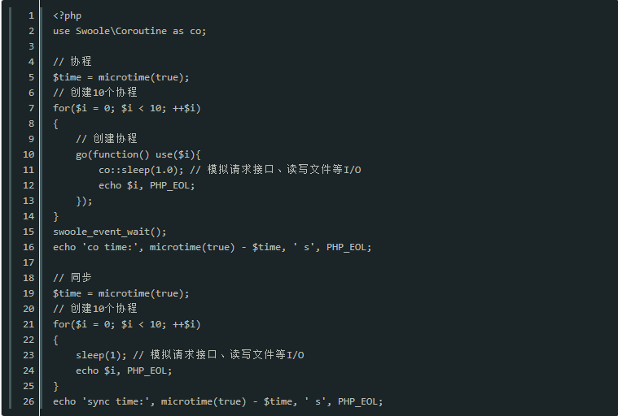

原文出处:本文由博客园博主.Ronin提供。
原文连接:https://www.cnblogs.com/heyue0117/p/11973777.html
原文连接:https://www.cnblogs.com/heyue0117/p/11973777.html
在 Swoole 官网的自我介绍是“面向生产环境的 PHP 异步网络通信引擎”，首先 Swoole 它是一个网络应用的开发工具，它支持 Http、TCP、UDP、WebSocket。

Swoole 和我们传统的 PHP 开发差别是有的，需要理解的概念也是有的。使用目前一些基于 Swoole 的框架开发的话，从开发习惯上和传统的TP、LV 框架相差不多。
那为什么要使用 Swoole？
我认为有以下几点：
常驻内存，避免重复加载带来的性能损耗，提升海量性能
协程异步，提高对 I/O 密集型场景并发处理能力（如：微信开发、支付、登录等）
方便地开发 Http、WebSocket、TCP、UDP 等应用，可以与硬件通信
PHP 高性能微服务架构成为现实
常驻内存
目前传统 PHP框架，在处理每个请求之前，都要做一遍加载框架文件、配置的操作。这可能已经成为性能问题的一大原因，而使用 Swoole 则没有这个问题，一次加载多次使用。
协程
说到协程，就得先简单说说进程和线程，众所周知进程是很占用资源的，为了处理请求大量创建进程肯定是得不偿失的。而多线程应用就比较多了，在 CPU 层面有几个核心就会执行几个任务，线程一旦创建的多了，就会有线程调度的损耗。
协程是在单线程基础上实现的，它可以最大限度利用 CPU 资源，而不会在等待 I/O 时白白浪费。当然，协程数越多占用的内存也就越多，不过这个是可以接受的，相比进程和线程，占用的资源是相对较少的。
使用协程时，遇到读写文件、请求接口等场景，会自动挂起协程，把 CPU 让给其它协程执行任务，这样可以提升单线程的 CPU 资源利用率，减少浪费，从而提高性能。
协程代码示例：

- 有需要学习交流的友人请加入Swoole交流群的咱们一起，有问题一起交流，一起进步！前提是你是学技术的。感谢阅读！
以上就是php有必要用swoole吗的详细内容，更多请关注我吧